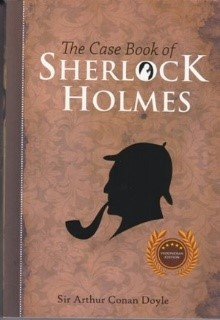

Judul Buku: Sherlock Holmes, Teka-Teki Hilangnya Nona Hatty Doran
Pengarang: Sir Arthur Conan Doyle
Penerbit: Narasi
Tahun Terbit: 2013
Jumlah Halaman: 156 Halaman
Genre: Fiksi
Novel dilan: dia adalah dilanku tahun 1990 menceritakan tentang kisah cinta Milea. Milea adalah seorang murid baru pindahan dari Jakarta. Dan di saat ia berjalan menuju sekolah, ia bertemu dengan seorang teman satu sekolahnya, seorang peramal. Peramal itu mengatakan bahwa nanti mereka akan bertemu di kantin. Awalnya Milea tidak menghiraukan laki-laki peramal itu, tapi setiap hari laki-laki peramal tersebut selalu mengganggunya. Mau tidak mau, Milea mulai mencari tahu, laki-laki peramal itu bernama Dilan. Suatu hari, saat Dilan mengikuti Milea pulang dengan angkot ia berkata, “Milea, kamu cantik, tapi aku belum mencintaimu. Enggak tahu kalau sore. Tunggu aja”. Perkataan Dilan itu membuat hati Milea berdebar-debar, mungkin ia kaget atas ucapan Dilan. Milea diam mendengar ucapan itu, ia juga memikirkan Beni, pacarnya yang ada di Jakarta. Dilan mendekati Milea dengan cara yang tidak biasa, mungkin itu yang membuat Milea selalu memikirkannya. Dilan memberikan coklat kepada Milea melalui tukang pos, Dilan membawa Bi Asih untuk memijiti Milea saat sedang sakit, Dilan memberikan hadiah Teka Teki Silang pada Milea sebagai hadiah ulang tahun dengan sebuah tulisan “Selamat ulang tahun, Milea. Ini hadiah untukmu, Cuma TTS. Tapi sudah kuisi semua. Aku sayang kamu. Aku tidak mau kamu pusing kaena harus mengisinya. Dilan” Lambat laun, seiring berjalannya waktu Milea dan Dilan menjadi akrab. Milea mengetahui beberapa hal tentang dilan dari Wati, sepupu Dilan yang sekelas dengannya. Sekolah Milea di Bandung terpilih menjadi peserta Cerdas Cermat TVRI, beberapa siswa yang bukan peserta dianjurkan untuk ikut memberikan semangat buat teman-temannya yang sedang berlomba. Milea salah satunya, dan di Jakarta ia sudah berencana untuk bertemu dengn Beni, pacarnya. Milea sudah lama menunggu Beni yang berjanji untuk datang ke TVRI, namun Beni tak kunjung datang. Akhirnya, Milea pergi makan bersama Nandan dan Wati. Saat itulah Beni datang dan marah-marah melihat Milea makan bersama laki-laki lain. Hubungan mereka pun berakhir.